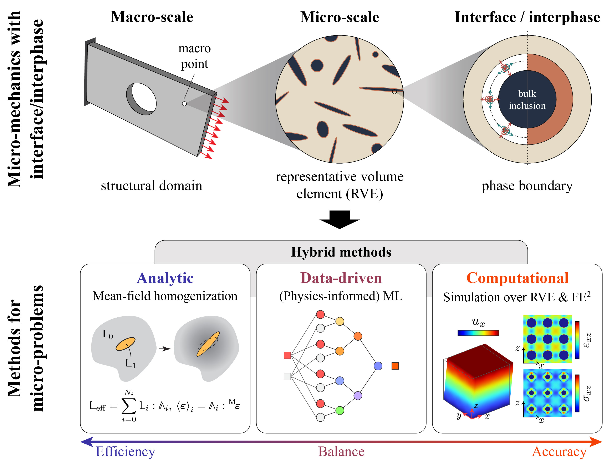
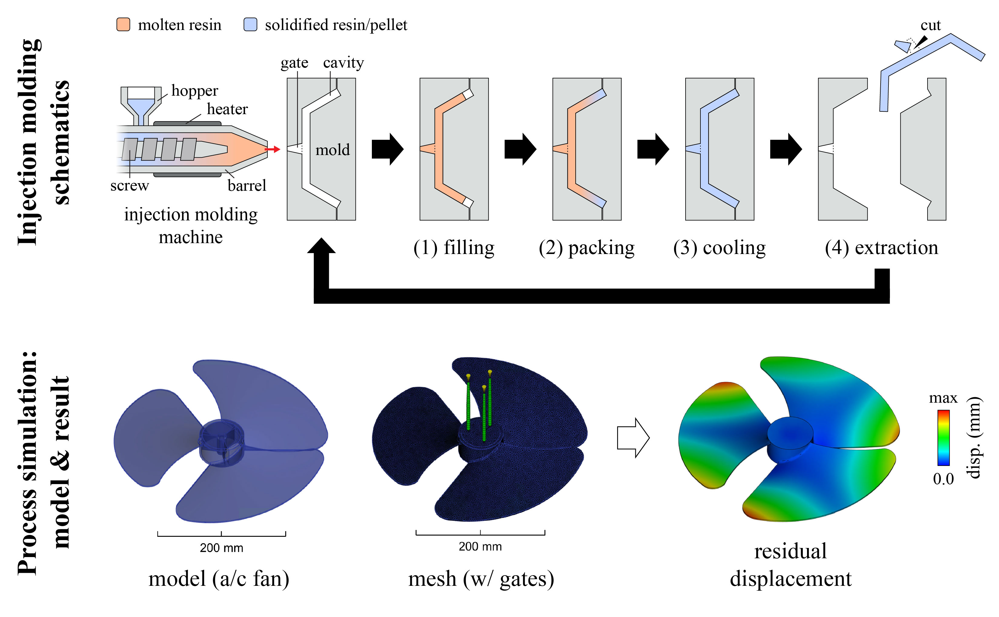
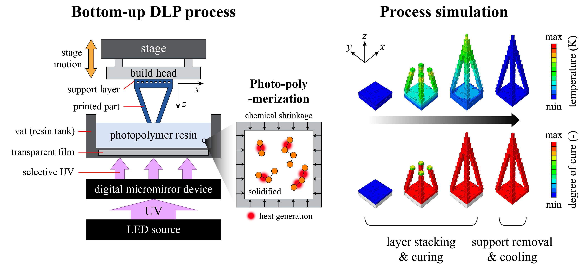
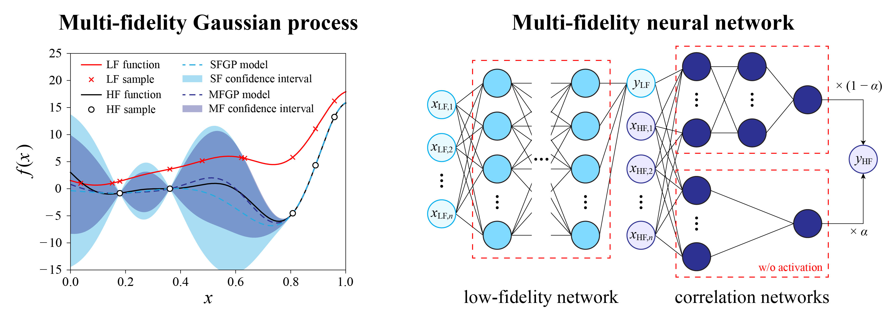
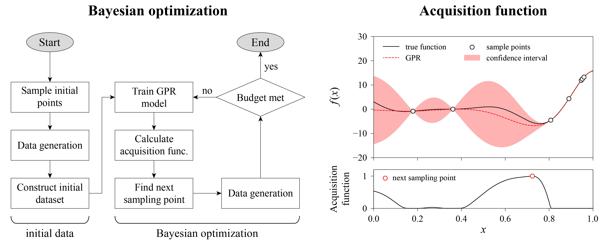
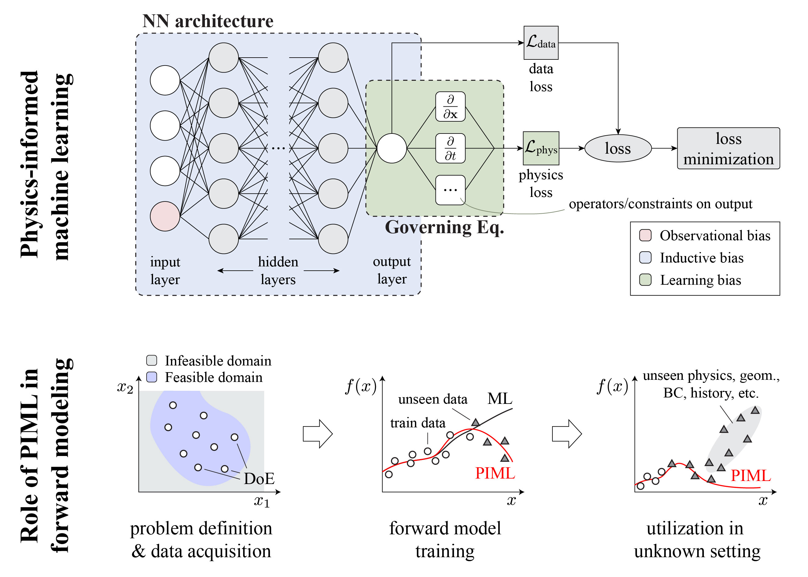
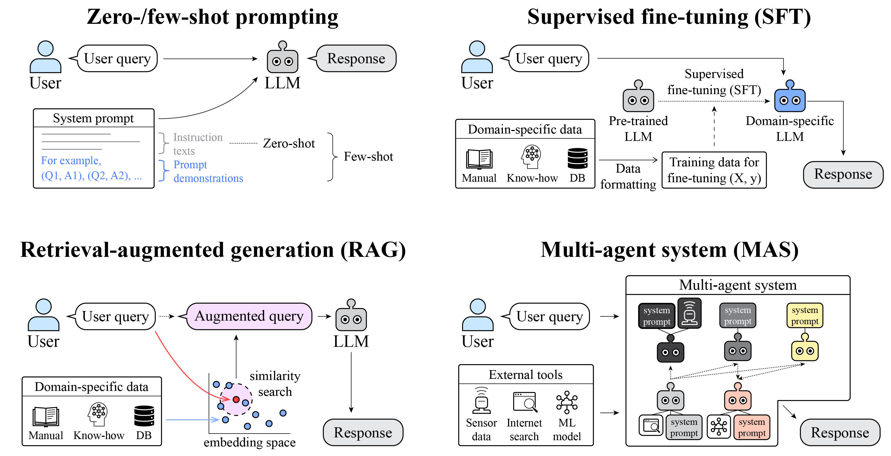

My research develops physics-grounded, cost-efficient methods for predicting and designing the mechanical behavior of composite materials and their manufacturing processes. Starting from analytic micromechanics of interface- and interphase-dominated composites, I extend toward data-driven surrogates for cost-constrained design problems, and am now working to embed this physical knowledge into large language model-based agentic systems for automated micromechanical analysis.
Interface (2D border) or interphase (3D bulk) between phases in heterogeneous media often govern macroscopic mechanical and functional properties, particularly for nano-heterogeneities with high area-to-volume ratio. My Ph.D. thesis analytically treated three matrix-inclusion composite systems with pronounced interface/interphase effects: mechanoluminescent composites with weak interface, liquid metal-elastomer composites with stiff metal oxide shells, and PA-GnP-GF hybrid composites with functionally graded interphases. Benchmarked against numerical results, these analytic methods achieved good prediction accuracy at a fraction of the computational cost, though they remain limited to specific inclusion geometries and simplified phase behavior. This motivates the data-driven extensions developed in my more recent work (manuscript in preparation).

Manufacturing processes govern the phase properties and microstructural state of materials, directly affecting both macroscopic properties and dimensional accuracy. Injection molding, one of the most widely used mass-production process for polymeric composites, depends critically on process parameters and part design, making pre-fabrication simulation essential. Since this simulation is high-cost and complex, I developed data-driven process parameter optimization methods under data scarcity.

Digital light processing (DLP), a vat photopolymerization additive manufacturing technique, enables fast, direct fabrication of arbitrarily-shaped polymeric parts, but suffers from dimensional inaccuracies in complex processing windows, especially for particle-filled resins. I developed a finite element modeling procedure using ABAQUS that reproduces experimentally observed deformation trends and curing states (manuscript in preparation; Lee, Jo and Ryu, ICTAM 2024 talk).

Engineering data is expensive to generate, and standard machine learning (ML) methods, suited primarily to in-distribution prediction, struggle under this data scarcity (Lee et al. (2023); Lee et al. (2025)). Multi-fidelity (MF) methods (while standard methods called single-fidelity; SF) address this by combining cheap, approximate low-fidelity (LF) data with costly, accurate high-fidelity (HF) data. My research investigated material transfer scenario in injection molding process design, and combined analytic low-fidelity data with experimental high-fidelity data to construct data-efficient surrogate for short fiber reinforced plastics (manuscript in preparation).

Bayesian optimization (BO) complements both standard and MF surrogates as a data-efficient global optimization technique, using an acquisition function to balance exploration (search for underexplored designs) and exploitation (search for optimal designs) under a limited sampling budget. I applied BO to injection molding process optimization, battery thermal management system design, and automotive tailgate rib design.

Purely data-driven methods face key limitations: heavy data requirement, poor out-of-distribution performance, and no guarantee of physical consistency. Physics-informed machine learning (PIML) addresses these by incorporating physical knowledge into ML systems. While standard methods like physics-informed neural networks (PINNs) enforce physical consistency, they struggle to generalize across unseen physics, geometry, and boundary conditions. In micromechanics context, deep material networks (DMNs; Liu et al., 2019) take a complementary, numerical-data-driven approach to this problem. My current research develops DMN in an interface-enriched setting (manuscript in preparation).

Large language models (LLMs) are transforming nearly all domain of engineering, but direct use of generic models suffers from inconsistency and hallucination. Recent studies address this by incorporating domain knowledge through strategies such as retrieval-augmented generation and multi-agent orchestration with external tools (Lee et al., 2025). My current research applies these strategies to design a multi-agent LLM system for assisting and automating micromechanical analyses.
